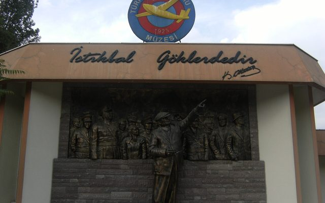

Startseite › Sehenswürdigkeiten nach Provinzen › Ankara
Der Kültür-Varlıkları-Führer verzeichnet 36 Orte in Ankara: 29 museum, 4 ausgrabungsstätte, 2 burg & historisches bauwerk, 1 sakralbau. Unten finden Sie die Höhepunkte, eine Karte und die vollständige Liste.
⭐ Höhepunkte

1 · Ankara · MuseumMuseum Anadolu Medeniyetleri
Das Museum der anatolischen Zivilisationen liegt am Fuß der Zitadelle von Ankara im restaurierten Mahmut-Pascha-Basar und dem Kurşunlu Han aus dem 15.

2 · Ankara · MuseumMuseum Gordion
Das Gordion-Museum liegt im Dorf Yassıhöyük bei Polatlı neben Gordion, der Hauptstadt des phrygischen Reiches – Stadt des sagenhaften Königs Midas und des „Gordischen…

3 · Ankara · MuseumMuseum 15 Temmuz Demokrasi
Das Museum für Demokratie des 15.
🗺 Auf der Karte
📍 Alle Orte (36)
Museum (29)
Museum Anadolu MedeniyetleriMuseumMuseum GordionMuseum · UNESCOMuseum 15 Temmuz DemokrasiMuseum Museum Alagöz KarargâhMuseum
Museum Alagöz KarargâhMuseum Museum Altınköy Açık HavaMuseum
Museum Altınköy Açık HavaMuseum Museum Anadolu Yaşayan Köy Açık HavaMuseum
Museum Anadolu Yaşayan Köy Açık HavaMuseum Museum Ankara OyuncakMuseum
Museum Ankara OyuncakMuseum Anıtkabir (Atatürk-Mausoleum)Museum
Anıtkabir (Atatürk-Mausoleum)Museum Atatürk Konutu ve Demiryolları MüzesiMuseum
Atatürk Konutu ve Demiryolları MüzesiMuseum Beypazarı Yaşayan MüzeMuseum
Beypazarı Yaşayan MüzeMuseum CerModernMuseum
CerModernMuseum Museum CumhuriyetMuseum
Museum CumhuriyetMuseum Erimtan Arkeoloji ve Sanat MüzesiMuseum
Erimtan Arkeoloji ve Sanat MüzesiMuseum Museum EtnografyaMuseum
Museum EtnografyaMuseum Museum Gökyay Vakfı SatrançMuseum
Museum Gökyay Vakfı SatrançMuseum Museum Hava KuvvetleriMuseum
Museum Hava KuvvetleriMuseum Museum Kurtuluş SavaşıMuseum
Museum Kurtuluş SavaşıMuseum Mke Sanayi ve Teknoloji MüzesiMuseum
Mke Sanayi ve Teknoloji MüzesiMuseum Odtü Bilim ve Teknoloji MüzesiMuseum
Odtü Bilim ve Teknoloji MüzesiMuseum Museum Resim HeykelMuseum
Museum Resim HeykelMuseum Museum Tcdd Açık Hava Buharlı LokomotifMuseum
Museum Tcdd Açık Hava Buharlı LokomotifMuseum Museum Tcdd Malıköy Tren İstasyonuMuseum
Museum Tcdd Malıköy Tren İstasyonuMuseum
Museum Türk Hava KurumuMuseum Museum Ulucanlar CezaeviMuseum
Museum Ulucanlar CezaeviMuseum Museum Çengelhan Rahmi M. KoçMuseumMuseum JandarmaMuseumKahramankazan 15 Temmuz Şehitleri ve Demokrasi MüzesiMuseumMehmet Akif Ersoy Edebiyat Müze KütüphanesiMuseumMuseum Mta Şehvar Doğa TarihiMuseum
Museum Çengelhan Rahmi M. KoçMuseumMuseum JandarmaMuseumKahramankazan 15 Temmuz Şehitleri ve Demokrasi MüzesiMuseumMehmet Akif Ersoy Edebiyat Müze KütüphanesiMuseumMuseum Mta Şehvar Doğa TarihiMuseumAusgrabungsstätte (4)
 Ankara Roma TiyatrosuAusgrabungsstätte
Ankara Roma TiyatrosuAusgrabungsstätte Tempel des AugustusAusgrabungsstätte
Tempel des AugustusAusgrabungsstätte Juliopolis NekropolüAusgrabungsstätte
Juliopolis NekropolüAusgrabungsstätte Römische Thermen von AnkaraAusgrabungsstätte
Römische Thermen von AnkaraAusgrabungsstätteBurg & historisches Bauwerk (2)

Sakralbau (1)

🧭 Routen mit dieser Provinz
🏺 Passende Kulturführer
Anatoliens erste Dörfer: Aşıklı Höyük und Çatalhöyük8300–5700 v. Chr. · NeolithikumDie Hethiter und die späthethitischen Königreiche1650–700 v. Chr. · Bronze- und EisenzeitPhryger und Lyder9.–6. Jh. v. Chr. · EisenzeitVon Gallipoli zur Republik1915 – 1923Die Seldschuken und die Beyliks1071 – 15. JahrhundertAnatolien in römischer Zeit133 v. Chr. – 4. Jh. n. Chr.